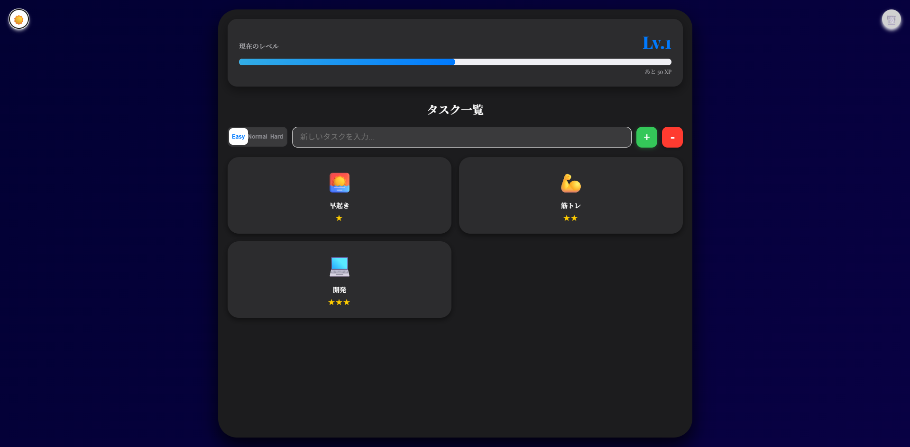

成長可視化型 ToDoアプリ
REF: RS-2026-V1
CATEGORY
WEB App
YEAR
2026
production time
2h
STATUS
ARCHIVED
更新情報
- ミュート機能を追加


LIFE AS A QUEST — 成長を可視化する、RPG風タスク管理システム
「退屈な日常のタスクを、RPGのクエストに変える」
単なる「やるべきことのリスト化」に留まらず、タスクを達成するたびに経験値（XP）を獲得し、レベルアップしていく仕組みを取り入れることで、ユーザーの自己研鑽をエンターテインメント化し、モチベーションを継続させることを目的としたToDoアプリです。
SYSTEM_SPECIFICATION
- LANGUAGE HTML5, CSS3, JavaScript (ES6+)
- AUDIO_ENGINE Web Audio API (for Sound Effects)
- STORAGE LocalStorage API
- Infrastructure GitHub, Vercel
TECHNICAL_POINTS
DATA_PERSISTENCE:
サーバーレスながら、LocalStorageを活用。ブラウザを閉じてもレベルやクエストデータが保持される永続化の仕組みを構築しました。
CODE_ARCHITECTURE:
ロジック(JS)、スタイル(CSS)、構造(HTML)を完全に分離。JS内ではgameStateやSoundManagerといったオブジェクトを定義し、拡張性の高いコードを目指しました。
[ NOTICE ]画像は製作段階のものです。最終的なアウトプットとは異なる場合があります。